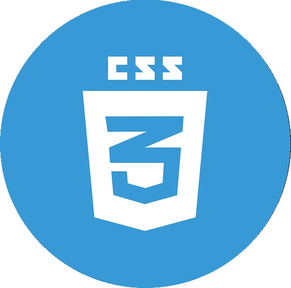
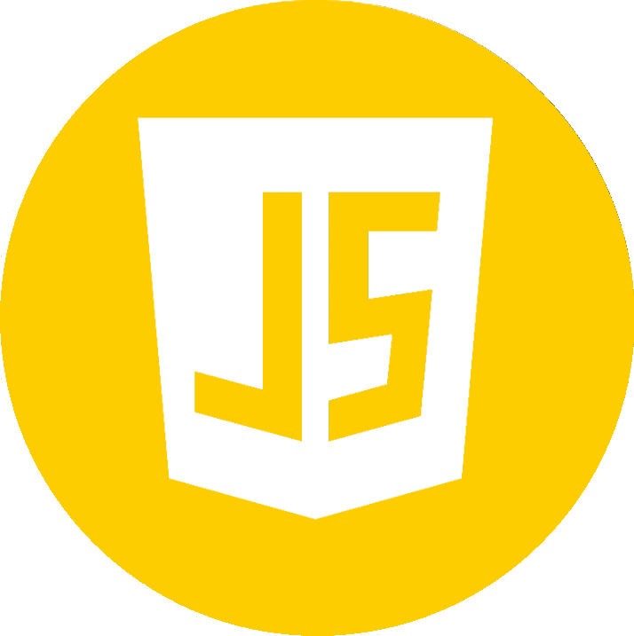
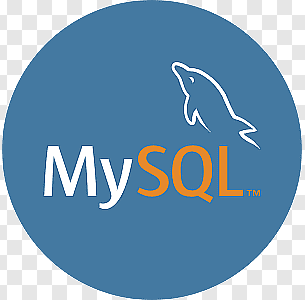

HTML - Tīmekļa struktūras pamats
Lai veidotu jebkuru WEB aplikāciju, ir nepieciešamas stabilas HTML zināšanas. Tas ietver:
- Pamata tagi: <html>, <head>, <body>, <div>, <span>, <p>, <h1>-<h6>, <ul>, <ol>, <li>, <a>, <img>, <form>, <input>, <button> u.c.
- Semantiskie tagi: <article>, <aside>, <nav>, <header>, <footer>, <section>, kas palīdz strukturēt saturu un uzlabo SEO.
- Formu elementi: Dažādi ievades lauki, pogas, izvēles saraksti un to atribūti datu ievadei.
- Multivides elementi: <img>, <video>, <audio> ievietošana un to pamata atribūti.
- Pieejamība (Accessibility): Kā veidot HTML, ņemot vērā lietotājus ar īpašām vajadzībām (piemēram, izmantojot `alt` atribūtus, semantiskos tagus).
CSS - Vizuālais noformējums un izkārtojums
CSS ir atbildīgs par to, kā WEB aplikācija izskatās. Svarīgi apgūt:
- Selektori: Kā atlasīt HTML elementus, lai tiem piešķirtu stilus (elementu selektori, klases, ID, atribūtu selektori, pseidoklases, pseidoelementi).
- Box Model: Izpratne par saturu, atkāpēm (padding), apmalēm (border) un ārējām atkāpēm (margin) un kā tie ietekmē elementu izmērus un izvietojumu.
- Izkārtojumi (Layout):
- Flexbox: Elastīgu viendimensionālu izkārtojumu veidošana.
- Grid: Spēcīgu divdimensionālu izkārtojumu veidošana.
- Float un Clearfix: Tradicionālas metodes izkārtojumiem (lai gan Flexbox un Grid ir ieteicamākas jauniem projektiem).
- Positioning: Kā kontrolēt elementu pozicionēšanu (static, relative, absolute, fixed, sticky).
- Tipogrāfija: Fontu ģimenes, izmēri, līnijas augstums, teksta formatēšana.
- Krāsas un foni: Kā izmantot krāsas, gradientus un fona attēlus.
- Responsīvais dizains:
- Media Queries: Stilu pielāgošana dažādiem ekrāna izmēriem.
- Elastīgi izmēri: Procentuāli un relatīvi izmēri (em, rem, vw, vh).
- Animācijas un pārejas: Vienkāršu animāciju un gludu pāreju veidošana.
JavaScript - Interaktivitāte un dinamika
JavaScript piešķir WEB aplikācijām interaktivitāti un ļauj veikt dinamiskas izmaiņas bez lapas pārlādes. Būtiskas zināšanas:
- Pamati: Mainīgie, datu tipi, operatori, kontroles struktūras (if/else, for, while), funkcijas.
- DOM (Document Object Model): Kā JavaScript var piekļūt un manipulēt ar HTML struktūru un saturu.
- Notikumu apstrāde (Event Handling): Kā reaģēt uz lietotāju darbībām (klikšķi, peles kustības, ievade formās).
- Asinhronā programmēšana: Kā veikt darbības, kas nebloķē galveno pavedienu (piemēram, AJAX pieprasījumi).
- AJAX (Asynchronous JavaScript and XML): Datu apmaiņa ar serveri bez lapas pārlādes.
- ES6+ sintakse: Jaunākās JavaScript versiju funkcijas (piemēram, arrow functions, let/const, promises, async/await, moduļi).
- Darbs ar datiem: JSON datu formāts un tā apstrāde.
- Bibliotēkas un ietvari (Frameworks): Pamatzināšanas par populārākajiem rīkiem kā React, Angular vai Vue.js (atkarībā no izvēlētā virziena).
MySQL - Datu bāzu pārvaldība
MySQL ir populāra relāciju datubāzu pārvaldības sistēma, ko izmanto WEB aplikāciju datu uzglabāšanai un pārvaldībai. Svarīgi apgūt:
- Relāciju datubāzu koncepti: Tabulas, kolonnas, rindas, primārās un ārējās atslēgas, relācijas starp tabulām.
- SQL (Structured Query Language): Valoda datu bāzes manipulācijai:
- CRUD operācijas: `SELECT` (datu atlase), `INSERT` (datu ievietošana), `UPDATE` (datu atjaunināšana), `DELETE` (datu dzēšana).
- Filtēšana un kārtošana: `WHERE`, `ORDER BY`, `LIMIT`.
- Apvienošana (JOIN): Datu apvienošana no vairākām tabulām.
- Agregācijas funkcijas: `COUNT()`, `SUM()`, `AVG()`, `MIN()`, `MAX()`.
- Grupēšana: `GROUP BY` un `HAVING`.
- Datubāzes normalizācija: Principi datu redundances samazināšanai un datu integritātes uzlabošanai.
- Drošība: SQL injekcijas novēršana.
PHP - Serveru puses loģika
PHP ir plaši izmantota serveru puses skriptu valoda WEB izstrādē. Svarīgi apgūt:
- Pamati: Sintakse, mainīgie, datu tipi, operatori, kontroles struktūras, funkcijas, klases un objekti (OOP).
- Darbs ar formām: Datu apstrāde no HTML formām (`$_GET`, `$_POST`).
- Sesijas un sīkdatnes (Cookies): Lietotāju stāvokļa un informācijas saglabāšana starp pieprasījumiem.
- Darbs ar datubāzēm (MySQLi vai PDO): Savienojuma izveide, vaicājumu izpilde un datu apstrāde.
- Drošība: Ievades validācija, datu sanitizācija, aizsardzība pret CSRF un citām ievainojamībām.
- MVC (Model-View-Controller) arhitektūra: Izpratne par koda strukturēšanas principiem (bieži izmanto ar ietvariem kā Laravel vai Symfony).
- Autentifikācija un autorizācija: Lietotāju reģistrācijas un piekļuves kontroles sistēmu izveide.
- API izstrāde: RESTful API veidošana datu apmaiņai ar citām aplikācijām.